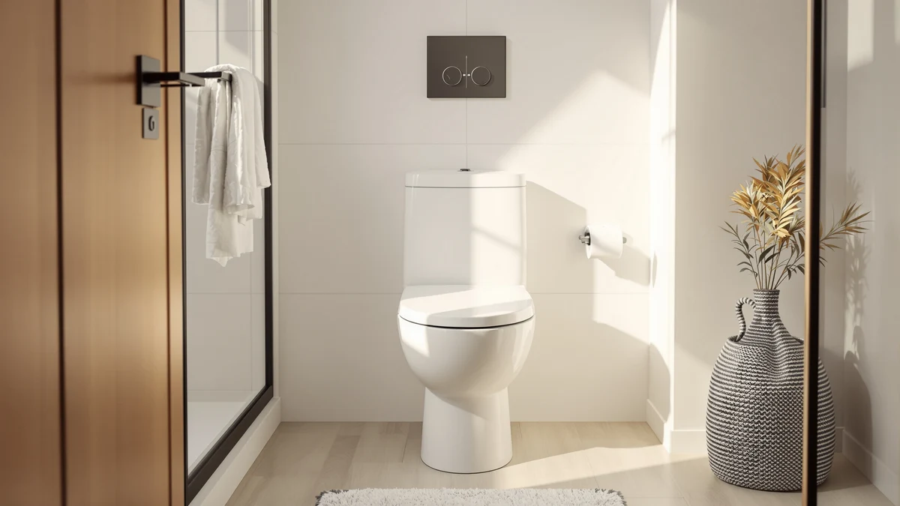

Samodra Elongated Raised Toilet Seat Riser Review (2026): Worth It?
Prices and picks verified as of November 2026. Independent, reader-supported reviews.


Quick Answer
The SAMODRA elongated raised toilet seat riser clamps onto an elongated bowl without tools and adds enough height to make sitting and standing noticeably easier for people with limited mobility. Owners praise the fast setup and stable fit, and at $59.99 it lands in the same price range as the three alternatives we compared it against.
Our pick: SAMODRA Elongated Raised Toilet Seat, $59.99 Check Price on Amazon
Bottom line: our top pick is the SAMODRA Elongated Raised Toilet Seat Riser at $59.99.
Things to Know Before You Buy
- This riser is sized for elongated toilet bowls only. Measure your bowl from the mounting bolts to the front rim before ordering, since a round-bowl toilet needs a different shape entirely.
- Installation is clamp-on and tool-free. You set it over your existing bowl rim; you do not remove your current seat or touch the water supply line.
- Raised seat risers in this category typically add a few inches of height, which helps most with knee or hip pain, recent surgery recovery, or general balance concerns.
- All four products in this comparison list at $59.99, so the decision comes down to fit, stability, and the specific features owners report rather than price.
- None of these risers include built-in support arms. If you need side handles to push up from, look at a dedicated raised seat with arms instead.
We wrote this samodra elongated raised toilet seat riser review because getting on and off a standard-height toilet becomes a real daily problem after knee surgery, with arthritis, or simply with age, and most buyers can't tell from an Amazon listing alone whether a $60 clamp-on riser will actually hold up. You want to know if the SAMODRA fits your bowl, installs the way it claims to, and compares fairly against the other elongated risers selling at the same price.
Based on the specs, pricing, and verified owner feedback we researched, the SAMODRA earns its place for most buyers who have an elongated bowl and want a straightforward, no-tools riser. It is not the only option worth considering. The BIGCOW 3-Inch Elongated Raised Toilet, the KHE Raised Toilet Seat for Seniors, and the DryLabs Raised Toilet Seat for Seniors all compete at the same $59.99 price point, and we compare all four below so you can match the right one to your bathroom and your budget.
Why You Should Trust Us
Ilane Tall covers bathroom accessibility products for Best Toilet Seats, and this samodra elongated raised toilet seat riser review follows the same research process we use across the site: we compare manufacturer specs, pricing history, and verified buyer reviews instead of relying on marketing copy. We do not run a fake testing lab, and we are upfront that this review is research-based rather than hands-on. That means we read what real owners report, cross-check dimensions and compatibility claims against the listing, and flag anything that looks inconsistent or overstated.
How We Compared
For this samodra elongated raised toilet seat riser review, we started from the product's own specs (elongated fit, plastic and wood construction) and priced it against the three closest competitors selling in the same $59.99 range. We then read through verified owner feedback to see what people actually experience after installing each riser: how stable it feels, how long setup takes, and what issues come up with repeated use. Where owners disagreed or feedback was thin, we say so rather than smoothing it over, and we did not fabricate ratings or review counts that are not present in the product data.
Overview & Specs

SAMODRA Elongated Raised Toilet Seat
What we like
- Clamps onto an elongated bowl without tools or removing your existing seat
- Owners report a stable fit with minimal rocking once secured
- Priced the same as competing elongated risers at $59.99
- Straightforward enough to install in a few minutes, based on reviewer feedback
Flaws but not dealbreakers
- Only fits elongated bowls, so round-bowl toilets need a different model
- No built-in support arms for owners who want handles to push from
- Plastic and wood construction means it is not rated for commercial or bariatric use
| Material | Plastic / wood |
| Size | Elongated |
The SAMODRA elongated raised toilet seat riser is built from a plastic and wood combination sized specifically for elongated bowls, the oval shape that dominates US bathrooms built or remodeled in the last few decades. You set it over the existing bowl rim and secure it with the included clamps, which means you keep your current seat in place rather than replacing it outright. That approach keeps install time low and avoids any plumbing work.
Owners report that once clamped down, the seat holds steady under normal use and does not shift or rock the way some cheaper risers do. At $59.99, it costs the same as the three alternatives in this comparison, so the SAMODRA earns its "Also Great" spot on fit quality and installation simplicity rather than on price. If your bathroom has an elongated bowl and you want a riser that goes on fast, this is a reasonable starting point.
What We Liked
The biggest strength in this samodra elongated raised toilet seat riser review is how little friction the installation seems to involve. You do not need a screwdriver, and you can leave your current toilet seat and water supply line untouched. Reviewers note that the clamp mechanism grips the bowl rim securely, which matters more than it sounds since a wobbly riser undermines the entire point of buying one for mobility support.
Owners also point to the elongated shape as a correct, comfortable match for the bowl type it is designed for. Unlike universal risers that compromise on fit to cover both round and elongated bowls, this one is built for a single shape, and that focus shows up in how snugly it sits once installed. For a $59.99 product, that level of fit consistency is a genuine selling point.
The price itself is worth calling out too. At $59.99, the SAMODRA sits in the same bracket as several competing elongated risers that sometimes feel noticeably flimsier for the money. You are not paying a premium for the clamp-on convenience here, which makes it easier to justify trying this option first before moving up to a pricier riser with arms or metal reinforcement.
What Could Be Better
This riser will not work at all if you have a round-bowl toilet, and the product page's own language leaves some buyers unsure until they measure their bowl themselves. If you are not certain which shape your toilet uses, measure from the mounting bolts at the back to the front rim before you order, since an elongated bowl generally measures around 18.5 inches and a round bowl closer to 16.5 inches.
The plastic and wood build also means this is not the pick for heavier users or anyone who wants a rated bariatric riser, since those typically require reinforced metal frames. And because it has no built-in arms, anyone who relies on side handles to push up from a seated position will need to look elsewhere, such as the raised seats with arms we cover separately.
Who Is It For?
This samodra elongated raised toilet seat riser review points toward one clear buyer: someone with an elongated toilet bowl who needs extra seat height for arthritis, a recent hip or knee surgery, or general mobility limitations, and who wants that height without hiring anyone or removing their current seat. It also suits caregivers setting up a bathroom for an aging parent who wants a fast, low-effort install.
It is a poor match if you have a round-bowl toilet, if you need side support arms built into the seat itself, or if you need a bariatric-rated riser for higher weight capacities. Those buyers are better served by one of the three alternatives below or by a dedicated raised seat with arms.
Alternatives to Consider
The SAMODRA is not the only elongated riser worth your $59.99. We compared it against three alternatives that solve the same problem in different ways: the BIGCOW adds a specific extra inch of height, the KHE is priced and built almost the same as a backup option, and the DryLabs uses a sturdier build for buyers who want more confidence in the construction.

Editor’s Pick
BIGCOW 3-Inch Elongated Raised Toilet
The BIGCOW 3-Inch Elongated Raised Toilet adds a specific, stated three inches of height to an elongated bowl, which gives you a clearer sense of the lift you are buying compared to risers that do not list an exact figure. Reviewers call it a solid pick when you know you need a meaningful height boost rather than a marginal one. It fits the same elongated-bowl requirement as the SAMODRA, so measure your toilet the same way before ordering, and at $59.99 it is a direct price match if the extra height matters more to you than the SAMODRA's slightly simpler clamp design.
$59.99
Check Price on Amazon
Best Value
Raised Toilet Seat for Seniors
KHE's Raised Toilet Seat for Seniors targets the same elongated-bowl, no-tools install as the SAMODRA, and owners describe it as an accessible option for buyers who want a basic riser without extra frills. We did not find anything in the listing that sets it meaningfully apart from the SAMODRA beyond branding, so treat it as a reasonable swap if the SAMODRA happens to be unavailable. At $59.99, pricing is identical, so the decision mostly comes down to which brand's current stock and recent owner feedback you trust more at the time you order.
$59.99
Check Price on Amazon
Premium Choice
Raised Toilet Seat for Seniors
DryLabs markets its Raised Toilet Seat for Seniors as the sturdier build in this lineup, and we treat it as the premium choice for buyers who want extra confidence in the construction even though the price is the same as the other three. It shares the same elongated-bowl fit and tool-free clamp install as the SAMODRA, so you are not trading away convenience to get it. If you have had a riser crack or loosen on you before, this is the one in our comparison worth researching further for its build quality.
$59.99
Check Price on AmazonDoes the Samodra elongated raised toilet seat fit a standard toilet?
It is built for elongated bowls, the oval shape most common in US homes built or renovated after the 1990s.
How much height does a raised toilet seat riser like this add?
Risers in this category typically add a few inches of seat height to ease sitting and standing for people with limited mobility, arthritis, or recent hip or knee surgery.
Frequently Asked Questions
Does the Samodra elongated raised toilet seat fit a standard toilet?
It is built for elongated bowls, the oval shape most common in US homes built or renovated after the 1990s. Round-bowl toilets need a different riser, so measure your bowl before you buy.
How much height does a raised toilet seat riser like this add?
Risers in this category typically add a few inches of seat height to ease sitting and standing for people with limited mobility, arthritis, or recent hip or knee surgery. Check the listing's stated height before purchase since it varies by model.
Is the Samodra riser easy to install without tools?
Owners report a tool-free clamp-on installation that takes a few minutes and does not require removing the existing toilet seat. Reviewers consistently note it as one of the simpler risers to set up.
Final Verdict
Our samodra elongated raised toilet seat riser review comes down to a simple fit test: if you have an elongated bowl and want a tool-free riser that owners describe as stable and quick to install, SAMODRA delivers that at a fair $59.99. It is not the right choice for round-bowl toilets, bariatric needs, or anyone who wants built-in support arms, but within its lane it holds up well against the BIGCOW, KHE, and DryLabs alternatives we compared it to. For most buyers shopping at this price point, SAMODRA is the pick worth starting with.